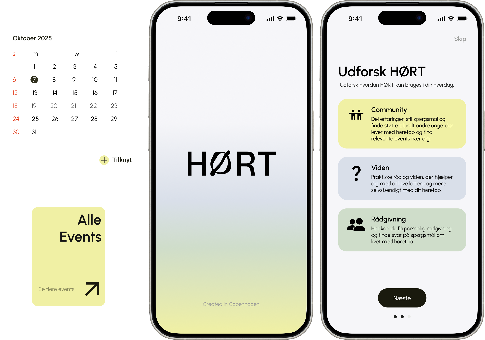
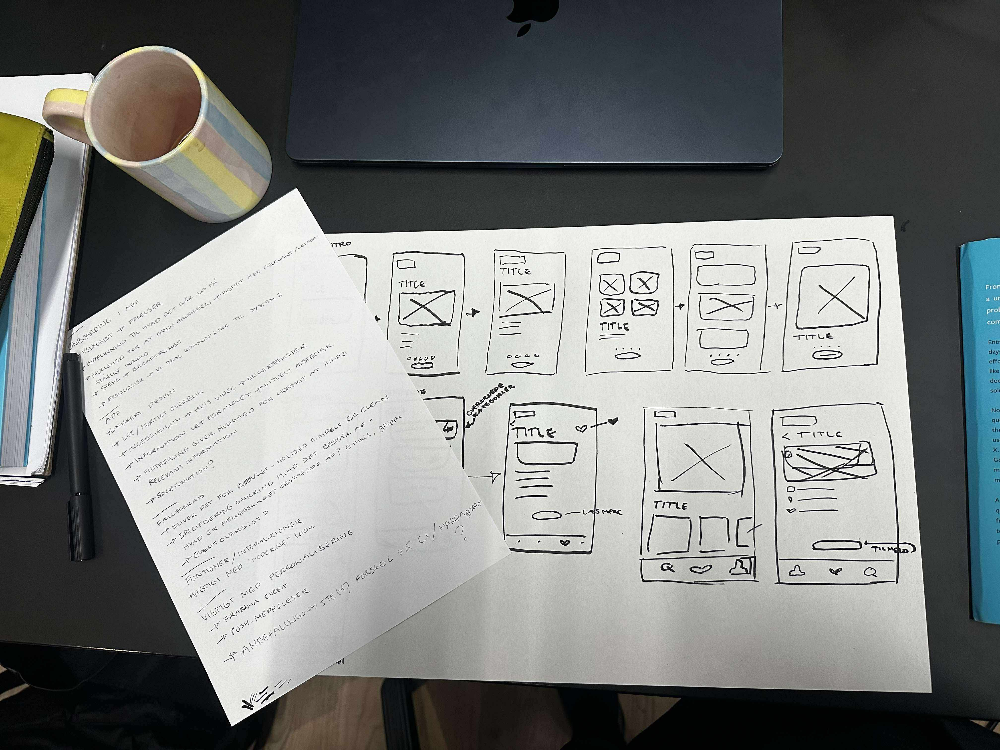

Student Project 2025
Digital Concept Development
HØRT
This project was developed in collaboration with a client aiming to empower young people with hearing loss
to take ownership of their hearing health and feel comfortable speaking openly about their condition.

Research
We began with a divergent research phase, conducting desk research that included market and competitor
analysis
We then interviewed a young person with hearing loss to incorporate the user perspective.
Finally, we synthesized our findings through hypothesis brainstorming and affinity diagramming, identifying
recurring themes and clarifying key user needs.
Insights
Our insights showed how young people with a hearing loss need support transitioning from medical care to
social
independence.
They seek relatable experiences, authentic information, and spaces that reduce stigma while
empowering them to take ownership of their hearing and well-being.

Design Sprint
Following our research insights, we ran a Google Ventures Design Sprint to rapidly explore solutions.
Over the week, we ideated, prototyped, and tested concepts that addressed the needs we uncovered:
supporting young people in the transition from medical care to social independence, providing relatable
experiences,
authentic information, and safe spaces that reduce stigma.
The sprint helped us quickly translate insights into actionable ideas, ensuring the concept directly
empowers users to take ownership of their hearing and well-being.


Concept
Building on our research and Design Sprint, the concept became an “Onboarding to Adulthood” experience.
After their final meeting with the client, users are introduced to the app Hørt, which supports young people
with hearing loss in taking ownership of their hearing and social life.
The key features included
Calendar reminders synced with hearing aid routines
Event notifications to connect with peers aged 18–25
Spaces to learn, confide, and share experiences
Hørt empowers users to transition from medical care to social independence in a structured, relatable, and
supportive way.